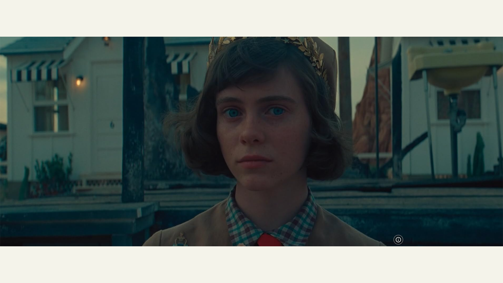
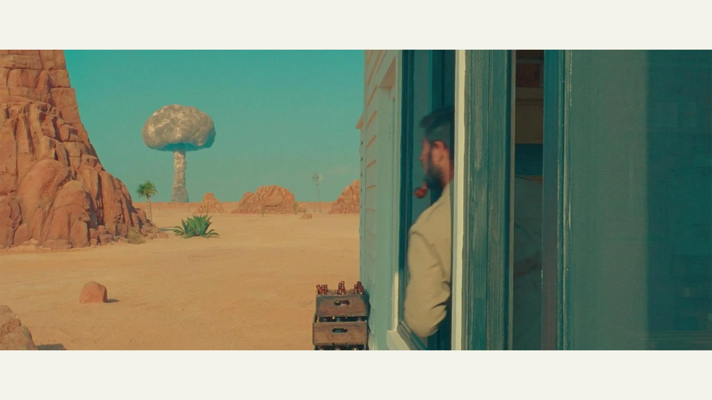
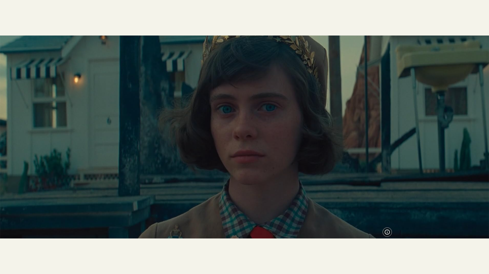
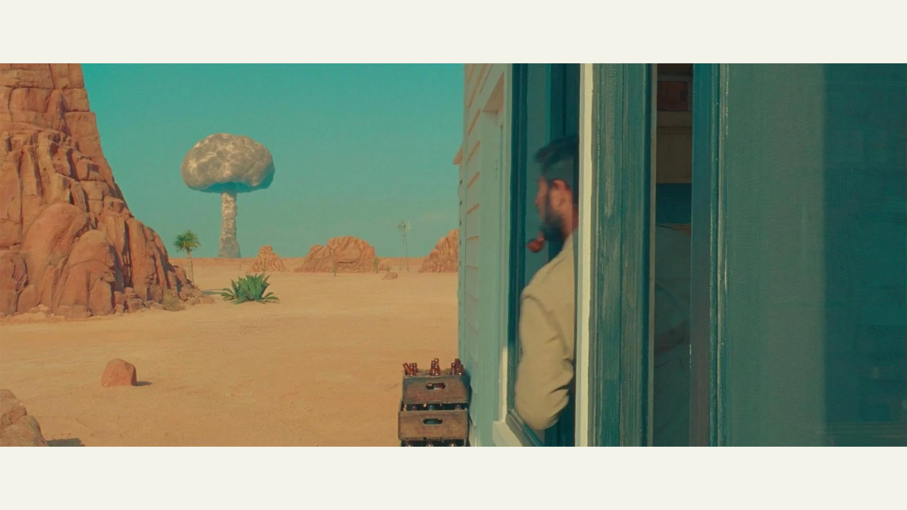

Asteroid City (2023)

"Asteroid City", najnovije ostvarenje reditelja, scenariste i producenta Vesa Andersona, predstavlja neobično i šarmantno delo koje kombinuje elemente komedije i drame. Ovaj film je premijerno prikazan na prestižnom Filmskom festivalu u Kanu i od tada privukao pažnju svojom jedinstvenom pričom i estetikom. Radnja filma prati događaje vezane za stvaranje svetski poznate fikcionalne predstave o ocu i njegovoj deci koji putuju u maleni ruralni grad Asteroid Siti. Njihov dolazak je deo konvencije Junior Stargazere/Space Cadete, okupljanja mladih naučnika i njihovih roditelja radi druženja i naučnog takmičenja. Međutim, njihov boravak će biti poremećen dolaskom nezvanog gosta. Radnja se istovremeno odvija u retrofuturističkoj verziji 1955. godine postavljenoj kao pozorišna predstava, a film istražuje kako se ta predstava stvara. "Asteroid City" obiluje šarenim i ekscentričnim likovima koji dodaju dubinu priči. Većina tih likova, od učiteljice do vlasnika motela, može se smatrati sporednim, ali upravo njihova prisutnost doprinosi čudnom humoru i bogatstvu filma. Centralni likovi su Ogi Stinbek (Džejson Švarcman), ratni fotograf i nedavni udovac, i njegova deca. Ova porodična drama se isprepliće sa Ogijevim odnosom sa komšinicom iz motela Midž Kembel (Skarlet Johanson), poznatom glumicom. Ves Anderson vešto uvodi gledaoce u svet Asteroid Sitija, koji nije namenjen da se doživi kao stvaran ili posebno važan.
Televizijski prenos u crno-beloj tehnici, vođen od strane karakterističnog voditelja (Brajan Krenston), dodaje jedinstvenu atmosferu filmu. Ovaj deo filma gotovo deluje odvojeno od vremena i prostora, pružajući nam uvid u svet Asteroid Sitija kroz medijum televizije. Središnja tačka filma je sama predstava, koja je napisana od strane Konrada Erpa (Edvard Norton). Naziv filma, "Asteroid City", predstavlja kombinaciju same predstave i ključnih informacija o njenom nastanku. Ova predstava postaje srž filma, kako u onome što se dešava na sceni, tako i u potrazi za dubljim značenjem unutar priče. "Asteroid City" uspešno istražuje dinamiku između umetnosti i stvarnosti, kao i ulogu koju umetnost ima u procesu suočavanja sa gubicima i promenama u životu. U konačnom ishodu, "Asteroid City" je film koji će vas nasmejati, dirnuti i naterati vas da razmišljate o snazi umetnosti u suočavanju sa životnim izazovima. Ves Anderson je ponovno demonstrirao svoju jedinstvenu kreativnost i viziju u ovom delu koje će ostaviti snažan utisak na gledaoce...."
Režija: Wes Anderson
Scenarijo: Wes Anderson, Roman Coppola
Uloge: Jason Schwartzman, Scarlett Johansson, Tom Hanks...
IMDB: 6.7/10
Rotten Tomatoes: 75% | 62%
Lično mišljenje: 6.5/10
 


